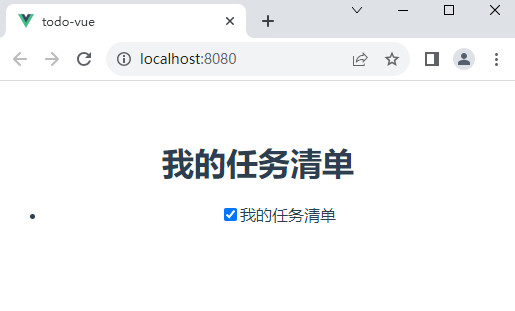

vue框架
现在我们将深入了解vue，并创建我们自己的自定义组件，我们将从创建一个组件来表示待办事项列表中的每个项目开始。在其他组件中调用组件，通过道具向它们传递数据，以及保存数据状态。
-
创建一个 ToDoItem 组件
让我们创建第一个组件，它将显示一个单一的待办事项。我们将用它来建立我们的待办事项列表。
- 在你的demo-vue/src/components目录下，创建一个ToDoItem.vue的新文件。在你的代码编辑器中打开该文件。
- 通过在文件顶部添加template标签来创建组件的模板部分。
- 在你的模板部分下面创建一个script部分。在script标签内，添加一个默认导出对象export default {}，这是你的组件对象。
代码如下：
<template> </template> <script> export default {}; </script>接下来我们要在todoitem中添加实际内容，vue模板目前只允许有一个根元素，我们将为该根元素使用一个div。
- 现在在你的组件模板中添加一个空的div。
- 在那个 div 里面，让我们添加一个 checkbox 和一个对应的 label。给复选框添加一个 id，并添加一个 for 属性，将复选框映射到标签上
如下所示：<template> <div> <input type="checkbox" id="todo-item" checked="false"> <label for="todo-item">我的任务清单</label> </div> </template> <script> export default {}; </script> -
在应用程序中使用 TodoItem 组件
我们已经顺利创建了一个全新的组件，但是我们还没有运用它，接下来需要把这个组件添加到应用程序中
-
打开App.vue文件
-
在script标签的顶部，添加以下内容来引入ToDoItem组件
如下所示：
<script> import ToDoItem from "./components/ToDoItem.vue" </script> - 在你的组件对象里面，添加 components 属性，然后在它里面添加你的 ToDoItem 组件进行声明
你的script中的内容应该是这样的：
import ToDoItem from "./components/ToDoItem.vue"; export default { name: "app", components: { ToDoItem, }, };要在应用程序中实际展示 ToDoItem 组件，你需要在 <template> 模板内添加一个 <to-do-item></to-do-item> 元素。
- 在<h1>下面，创建一个无序列表 (<ul>)，其中包含一个列表项 (<li>)。
- 在列表项 (<li>) 里面添加<to-do-item></to-do-item>.
你的App.vue的<template>内容现在应该是这样的：<template> <div id="app"> <h1>To-Do List</h1> <ul> <li> <to-do-item></to-do-item> </li> </ul> </div> </template> -
-
使用 props 让组件动态化
我们的 ToDoItem 组件仍然不太可用，因为我们只能在页面上包含它一次（ID 必须唯一），而且我们没有办法设置 label 标签的文本。
在 Vue 中，注册 props 的方式有两种：
- 第一种方式是，以字符串数组的方式列出 props，数组中的每个实体对应一个 prop 名称。
- 第二种方法是将 props 定义为一个对象，每个 key 对应于 prop 名称。将 props 列为对象允许你指定默认值，将 props 标记为 required，执行基本的对象类型 (特别是 JavaScript 基本类型) ，并执行简单的 prop 校验。
这里我们使用第二种方法
- 回到 ToDoItem.vue 文件。
- 在默认导出的 default {} 对象中添加一个 props 属性，该 props 属性含有一个空对象。
- 在这个对象里，添加两个 key 为 label 和 done 属性。
- label 的值应该是一个带有两个属性的对象（或者是 props，因为它们被调用在可找到的组件的 context）
- 第一个 required 属性，它的值是 true. 这将会告诉 Vue 说，我们希望每个该组件的实例都必须有个 label 字段。如果 ToDoItem 组件没有 label 字段的话，Vue 会提示警告。
- 第二是添加一个 type 属性。这个属性的值设为 JavaScript 的 String 类型。这等于告诉 Vue，我们希望 type 属性的值是 String 类型的。
- 现在转向 done prop
- 首先添加一个 default 属性，它的值是 false。这意味着当没有 done prop 被传递给 ToDoItem 组件时， done prop 的值会是 false（注意 default 属性不是必需的————我们只在非 required props 里才需要 default ）
- 接着，添加一个 type 属性，值为 Boolean。这将告诉 Vue，我们希望这个 prop 的值是 JavaScript 的 Boolean 类型。
如下所示：<script> export default { props: { label: { required: true, type: String }, done: { default: false, type: Boolean } } }; </script> -
使用已注册的 props
在 template 里使用这些变量值。让我们开始向组件模版中添加 label prop。
在你的 <template> 中，将 <label> 标签的 contents 内容修改为 {{label}}
组件的 template 部分应该是像这样：
<template> <div> <input type="checkbox" id="todo-item" checked="false" /> <label for="todo-item">{{label}}</label> </div> </template>现在我们已经将值改成了label，所以接下来我们需要将值通过一个data函数传输过去
-
Vue的数据对象
我们目前的checked和label都已经暂时没有什么问题，现在还剩下一个done没有完成相应的功能，首先我们需要先把done和我们的input标签绑定在一起。我们可以使用 Vue 的data 属性来管理 done 的状态。
如下：export default { props: { label: { required: true, type: String }, done: { default: false, type: Boolean }, }, data() { return { isDone: this.done, }; }, };现在我们需要将 isDone 属性附加到我们的组件。Vue 有一种特殊的语法将 JavaScript 表达式绑定到 HTML 元素和组件：v-bind。
将我们原先的checked=“false”更换成v-bind:checked="isDone"
如下：<input type="checkbox" id="todo-item" v-bind:checked="isDone" /> -
给 Todos 一个唯一的 ID
我们可以在其中以编程方式设置状态。但是，我们目前只能向页面添加一个 ToDoList 组件，因为 id 是硬编码的。这将导致辅助技术出错，因为需要 id 才能将标签正确映射到其复选框。为了解决这个问题，我们可以以编程方式在组件数据中设置 id。
我们可以使用 lodash 包的 uniqueid() 方法来帮助保持索引的唯一性。此包导出一个函数，该函数接收字符串并将唯一整数追加到前缀的末尾。这足以保持组件 id 的唯一性。
在终端输入npm install --save lodash.uniqueid
如果你更喜欢 yarn，则可以改用 yarn add lodash.uniqueid。
现在，我们可以将此包导入我们的 ToDoItem 组件中。在 ToDoItem.vue 的 <script> 元素的顶部添加以下行：
import uniqueId from "lodash.uniqueid";接下来，将字段 id 添加到我们的数据属性中，这样组件对象最终看起来就是这样（uniqueId() 返回指定的前缀——todo——并附加一个唯一的字符串）：
最后将 id 绑定到复选框的 id 属性和标签的 for 属性，更新现有 id 和 for 属性，如下所示：
<template> <div> <input type="checkbox" :id="id" :checked="isDone" /> <label :for="id">{{label}}</label> </div> </template>
渲染你的应用程序，看到的界面就是我们的结果：
到目前为止，我们列表中的选项就已经有了一个唯一的id